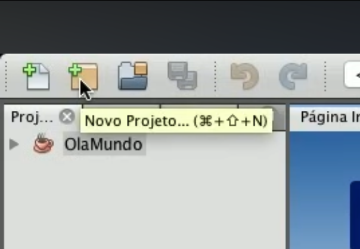
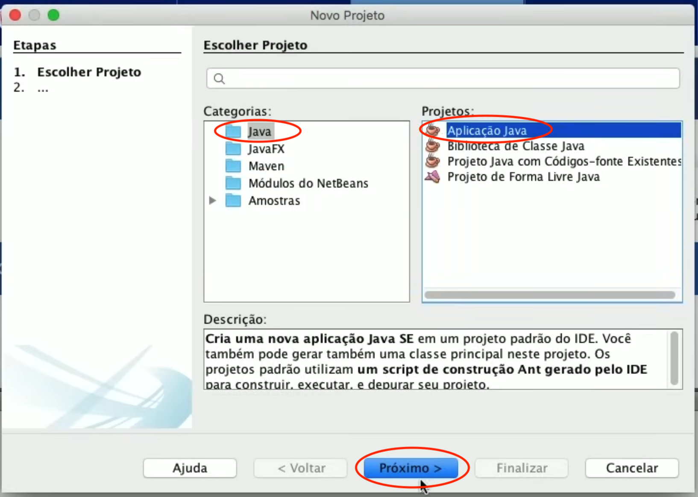
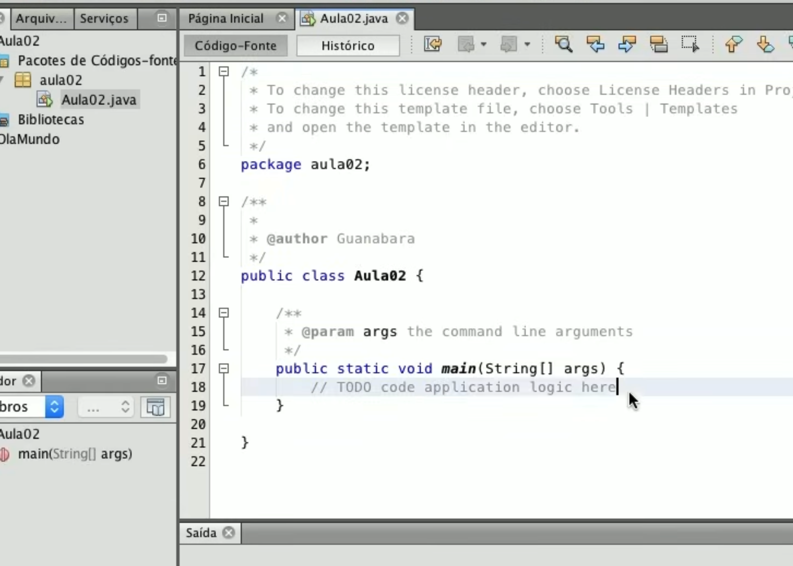
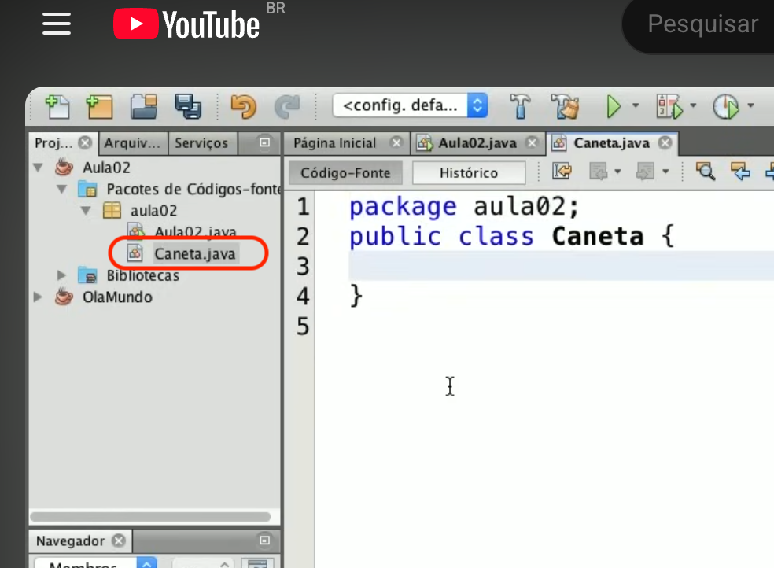
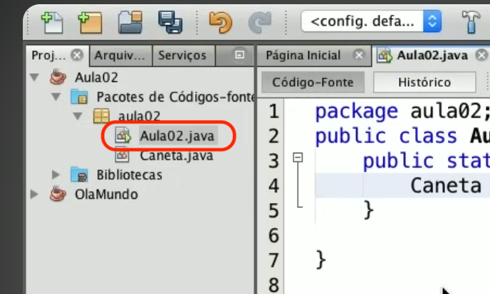
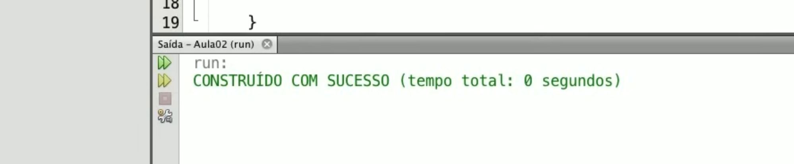
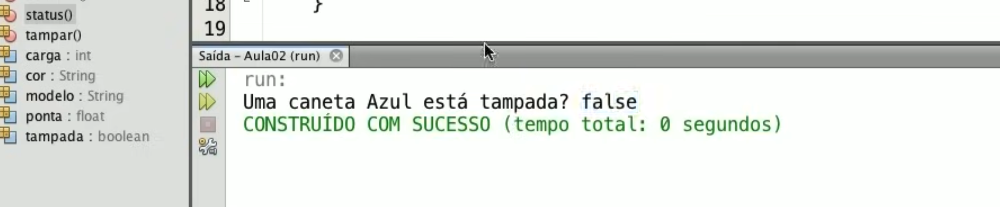

Praticando POO com Java (NetBeans)
Nesta página, iremos aplicar na prática os conceitos de Programação Orientada a Objetos (POO) utilizando a linguagem Java. O foco será sair da teoria e entender como esses conceitos são utilizados no desenvolvimento de programas reais.
Para isso, utilizaremos uma ferramenta chamada IDE (Integrated Development Environment), ou Ambiente de Desenvolvimento Integrado. Uma IDE é um software que reúne, em um único lugar, recursos essenciais para o desenvolvimento de programas, como:
- Editor de código
- Compilador
- Organização de arquivos do projeto
- Ferramentas de execução e depuração
Existem diversas IDEs disponíveis para programação em Java, como IntelliJ IDEA, Eclipse e NetBeans Cada uma possui suas características e o aluno tem total liberdade para utilizar aquela com a qual se sentir mais confortável.
No entanto, ao longo desta página, utilizaremos o NetBeans como referência. Isso ocorre porque ele apresenta algumas vantagens importantes, especialmente para quem está iniciando na programação:
- Interface simples e organizada
- Criação automática da estrutura do projeto
- Facilidade na execução de programas Java
- Boa integração com recursos educacionais
Dessa forma, o NetBeans permite que o aluno foque no que realmente importa neste momento: compreender os conceitos de Programação Orientada a Objetos, sem se preocupar excessivamente com configurações técnicas mais avançadas.
Ao final desta prática, você será capaz de criar classes, instanciar objetos e entender como esses elementos se relacionam dentro de um programa Java.
1. Criando um projeto no NetBeans
O primeiro passo é criar um projeto na IDE NetBeans.
- File → New Project
- Java Application
- Nome do projeto

Na nova janela que abrirá selecionamos:
- Java
- Java Application
- Próximo

Vamos dar um nome para o projeto. Vamos chamar este de "Aula02"
Depois que você clicar em "Finalizar", o Netbeans terá criado todo o pacote.

2. Criando uma classe
Uma classe é a estrutura básica da Programação Orientada a Objetos, responsável por definir como um determinado elemento será representado no programa. Nela são organizados os dados (atributos) e as operações (métodos), formando uma unidade lógica que descreve o comportamento e as características de um objeto.
Em Java, a criação de uma classe é feita utilizando a palavra-chave class, seguida de sua definição. É a partir dessa estrutura que construiremos os elementos que serão utilizados na prática ao longo desta atividade.
Partimos agora para a criação da classe Java na IDE. Na verdade o que vamos fazer agora é criar a classe "Caneta" como vimos nas primeiras aulas com seus atributos e métodos que foram exemplificados nas aulas anteriores.
Classe Caneta
modelo: caractere
cor: caractere
ponta: real
carga: inteiro
tampado: lógico
Metodo rabiscar ()
FimMetodo
Metodo tampar()
FimMetodo
FimClasse
Para isso vamos clicar com o botão direito no pacote e seguir os passos:
- Novo
- Classe Java
Damos um nome à classe observando que no Java utilizamos para a classe o CamelCase, ou seja, se for um nome composto, iniciamos a segunda palavra com inicial maiúscula e sem espaços. Mas neste exemplo o nome da classe será "Caneta".
Agora temos a classe caneta criada.

Agora vamos criar os atributos e métodos da classe Caneta. Criamos os atributos lembrando de especificar o tipo de de dado cada um deles.
Na criação dos métodos iniciamos com a palavra void (que significa sem retorno), lembrando de colocar parênteses para cada método criado.
package aula02;
public class Caneta {
/* Atributos */
String modelo;
String cor;
float ponta;
int carga;
boolean tampada;
/* Métodos */
void rabiscar(){
}
void tampar (){
}
void destampar (){
}
}
A partir de agora já temos nossa classe Caneta e podemos utilizar ela dentro do pacote.
⬆ Voltar ao topo3. Instanciando objetos
Objetos são instâncias de uma classe.Para que um objeto seja criado temos que, primeiro ter criado a classe. Utilizamos a denominação instanciar para dizer que criamos um objeto.
Podemos usar a classe principal que foi criada automaticamente pelo Netbeans para, dentro dela instanciar um objeto (Caneta).
package Aula02;
public class Aula02 {
public static void main (String[] args){
}
}

Instanciamos um objeto definindo que a classe recebe o objeto e o objeto é um novo objeto dentro da classe.
Caneta c1 = new Caneta();
Em Java temos:
package Aula02;
public class Aula02 {
public static void main (String[] args){
Caneta c1 = new Caneta();
}
}
Agora temos o objeto c1 que é um objeto caneta instanciado.
⬆ Voltar ao topo4. Atribuindo valores aos objetos
Depois que o objeto é instanciado podemos dar valores aos atributos. No nosso exemplo temos a caneta com os atributos modelo, cor, ponta e tampada que recebe um valor booleano. Fazemos estas alterações também dentro da classe principal.
package Aula02;
public class Aula02 {
public static void main (String[] args){
Caneta c1 = new Caneta();
c1.cor = "Azul";
c1.ponta = 0.5f;
c1.tampada = false;
}
}
A estrutura de cada elemento é esta:
c1
Nome do objeto que acabamos de criar.
.cor
Nome do atributo escolhido para alterar o valor.
"Azul"
Valor dado ao atributo.
O atributo está entre "" aspas porque é uma String.
Se executarmos agora teremos o seguinte resultado:

Vemos a mensagem: "Construído com sucesso" mas sem nenhum resultado visual. Vamos criar um novo método que irá mostrar o estado do objeto para que tenhamos um resultado mais satisfatório. Mas antes, temos que fazer uma chamada para o método dentro do arquivo com a classe principal para que o método status passe a funcionar.

Esta foi a chamada para o método status. Uma característica que difere o método dos atributos são os parênteses que devem ser inseridos mesmo que o método não tenha nenhum parâmetro. Abaixo iremos incluir parâmetros para o método status.
void status(){
System.out.print ("Uma caneta " + this.cor);
}
O "this" é uma autoreferência. Desta forma, quem chamou o método status será substituído por "this". O "this" é o nome do objeto que chamou. Sempre que quiser modificar algum atributo dentro da própria classe utilize a palavra "this".
Vamos acrescentar mais detalhes de atributos do nosso objeto e executar novamente:
void status(){
System.out.print ("Uma caneta " + this.cor);
System.out.println (" está tampada? " + this.tampada);
}

Vamos acrescentar mais atributos?
void status() {
System.out.println ("Modelo: " + this.modelo);
System.out.println ("Uma caneta " + this.cor);
System.out.println ("Ponta:" + this.ponta);
System.out.println ("Carga: " + this.carga);
System.out.println ("Está tampada? " this.tampada);
}
Trabalhando com os métodos
Agora vamos definir os parâmetros para os métodos tampar e destampar. Na classe Aula02 vamos alterar o atributo tampada para que ele se torne um método:
package Aula02;
public class Aula02 {
public static void main (String[] args){
Caneta c1 = new Caneta();
c1.cor = "Azul";
c1.ponta = 0.5f;
c1.tampar (); //antes estava assim: c1.tampada = false;
c1.status ();
}
}
void tampar(){
this.tampada = true;
}
void destampar() {
this.tampada = false;
}
Vamos definir alguns parâmetros para o método rabiscar e veremos agora algumas interações interessantes.
Para rabiscar com uma caneta primeiro devemos observar se ela está destampada, senão você não poderá rabicar. Vamos então definir isto no nosso código. Lembre-se de chamar o método rabiscar() na classe principal.
void rabiscar(){
if (this.tampada==true){
System.out.println("ERRO! Não posso rabiscar!");
} else {
System.out.println ("Estou rabiscando");
}
}
Quando executamos nosso código percebemos que ele retornou uma mensagem de erro. O motivo desta mensagem foi exatamente o que definimos anteriormente. Se a caneta estiver tampada a mensagem de erro será exibida. Senão a mensagem que será mostrada será a seguinte: "Estou rabiscando."
Para corrigir isto devemos chamar o método destampar ao invés do método tampar como estava antes.
Vamos criar um novo objeto e fazer alguns testes com novos valores de atributos agora. Mantenha os valores atuais do objeto c1 e trabalhe apenas com os atributos do novo objeto.
package Aula02;
public class Aula02 {
public static void main (String[] args){
Caneta c1 = new Caneta();
c1.cor = "Azul";
c1.ponta = 0.5f;
c1.tampar();
Caneta c2 = new Caneta();
c2.modelo = "Bic";
c2.cor = "preta";
c2.destampar();
c2.rabiscar();
}
}
⬆ Voltar ao topo